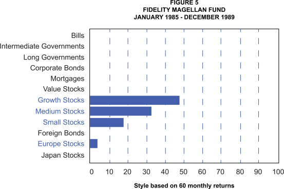

In William Sharpe’s 1992 work referenced on the previous page, he used 12 indices as the basis for examining the exposures of a manager’s portfolio. Listed below are the indices that he used and how they were constructed.
Click each index to learn more.
The intention of the style analysis was to explain the exposures of a portfolio. It would also provide some explanation of the returns based on market exposures versus those that would naturally be attributed to security selection.
Below is the analysis shown in the 1992 article detailing the style analysis of Fidelity Magellan for the period 1985-1990.
As can be seen below, the analysis of the Fidelity Magellan fund at the time was based on 60 monthly observations of performance history and indicated that 97.3% of the performance was determined from style exposures while approximately 3% of the return was generated by stock selection.
-
The second graph provides insights into the exposures identified in the style analysis, showing that the fund showed strong exposure to growth stocks as well as medium and small cap stocks. Click the blue links to learn more.
